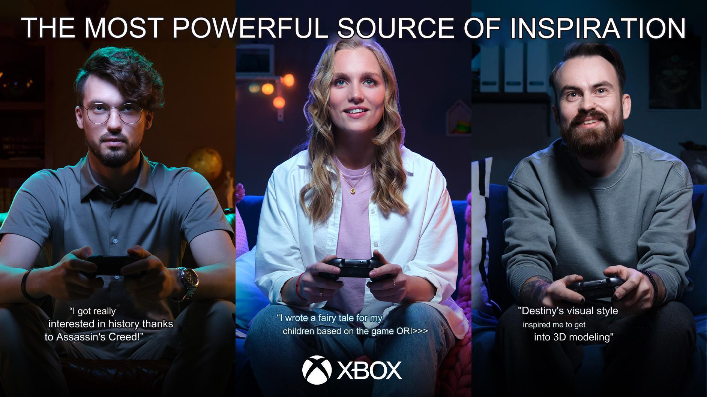

XBOX
Turned audience language into a launch idea.
For the Xbox Series S|X launch, the strategic work started with audience analysis rather than product specs. This is included as a research-to-narrative case, not a performance case.
Insight
We analyzed 100K audience comments and found 3,500 comments that supported the insight: games can inspire people to try something new. That gave the launch idea an audience foundation instead of a generic gaming claim.
Results
The creative team built on the insight; the client launched a video and static materials. Campaign results stayed on the Xbox side and were not shared with the agency, so this case only uses the parts I can stand behind.

Key visual
The most powerful source of inspiration.
The key visual translated the research insight into a simple creative idea: games can move people beyond play and inspire them to learn, create and try something new.
Research base100K audience comments analyzed.
Insight base3,500 comments supported the "games can inspire" direction.
Launch outputVideo and static materials launched by the client.
Client signalPositive client feedback; campaign results stayed on the Xbox side.